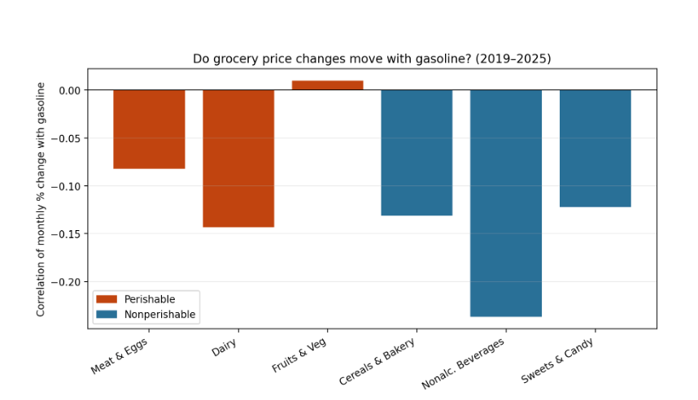

Study period
2019–2025
Seven years of monthly price data
U.S. inflation analysis
A comparison of perishable and nonperishable food categories in the United States from 2019 to 2025.
Study period
2019–2025
Seven years of monthly price data
Observations
84
Monthly observations per category
Categories
7
Gasoline and six grocery groups
Main result
Small overall effect
Gasoline was not the main driver of grocery prices
02
The study examined whether changing gasoline prices were followed by different price changes across grocery categories.
How does gasoline-price inflation affect price changes in perishable compared to nonperishable grocery categories in the United States from 2019 to 2025?
Food must be transported from farms and factories to warehouses and stores. Higher gasoline prices may increase transportation and distribution costs.
Perishable foods often require refrigeration, faster delivery, and more frequent shipments. This could make them more sensitive to changes in fuel costs.
03
Monthly Consumer Price Index data was used to track gasoline and grocery-price changes.
Data source
Consumer Price Index for All Urban Consumers, U.S. city average.
04
Several statistical methods were used to measure relationships and compare forecasting accuracy.
Preparation
Dates were placed in order, CPI values were converted into numbers,and the data was organized for analysis.
Comparison
Monthly percentage changes were used instead of comparing only the CPI index levels.
Relationship
Correlations measured whether gasoline and grocery prices generally moved together.
Prediction
Separate SARIMA models and one combined VAR model were used to predict 2025 prices.
Testing
These methods tested whether earlier gasoline changes helped predict later food changes.
72 months
12 months
05
The results showed large gasoline swings but weak connections between monthly gasoline and grocery price changes.
Key finding
Gasoline experienced larger and faster price changes than all six grocery categories.
Most correlations between gasoline and food price changes were close to zero.
The difference between perishable and nonperishable categories was small overall.
All estimated grocery-price responses stayed below 0.1 CPI index points.
Visualization 01

Statistical test
Significant when p-value is below 0.05
| Grocery category | Group | P-value | Result |
|---|---|---|---|
| Meat and eggs | Perishable | 0.006 | Significant |
| Dairy | Perishable | 0.098 | Not significant |
| Fruits and vegetables | Perishable | 0.174 | Not significant |
| Cereals and bakery | Nonperishable | 0.126 | Not significant |
| Nonalcoholic beverages | Nonperishable | 0.898 | Not significant |
| Sweets and candy | Nonperishable | 0.134 | Not significant |
Forecast accuracy
Lower RMSE means the model produced more accurate predictions.
category wins
category wins
06
These limits affect how strongly the findings can be interpreted.
The study included only 84 monthly observations.
Wages, farming costs, oil prices, packaging, and supply-chain conditions were not included.
The pandemic and avian influenza may have affected the observed price patterns.
Statistical relationships do not prove that gasoline directly caused grocery prices to change.
07
Final conclusion
Gasoline-price inflation had only a small effect on most grocery categories between 2019 and 2025.
Meat and eggs was the only category with a clear predictive relationship. Perishable categories appeared slightly more affected, but the overall difference was limited.
Other factors such as labor, farming costs, packaging, supply problems, and broader inflation likely played larger roles.